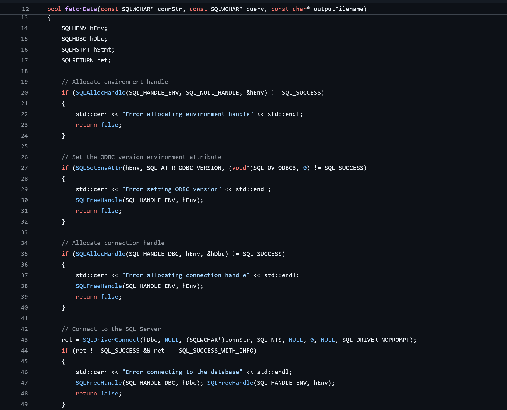

Derivatives Research C++ Data Pipeline
Data CleaningSystem DesignProject link: GitHub
During the Winter 2024 academic term, I worked as a Derivatives Research Assistant at Dalhousie University. I was tasked with supporting options research by aggregating data.
Code snippet:
Project Challenge: Large-Scale Data Extraction
The research was based on the IvyDB OptionMetrics database, a massive dataset containing billions of historical options records from 1998 to 2022, hosted in an SQL environment. A significant bottleneck to the project was the need to efficiently extract, sort, and clean this data. The records included numerous metrics such as price, expiration, implied volatility, and various option Greeks that needed to be organized before any statistical analysis could be performed.
Solution: C++ Data Pipeline
Why was C++ chosen as the method for data extraction? Most people would use Python.
I chose to build the data pipeline in C++ for a few key reasons. With a dataset of billions of records, its superior speed and performance were the primary drivers. I also found it offered a more straightforward path for connecting to the database in that specific environment. On top of that, it was a good opportunity to use C++, a language I enjoy writing in.
My main responsibility was to solve this data extraction problem. To do this, I built a data pipeline using C++ to automate the entire workflow. I developed scripts that connected directly to the SQL database to execute queries, retrieve the raw data, and then clean and process the billions of records. This process sorted the options data according to the professor's specific research parameters, preparing it for analysis.
Project Outcome
The automated data pipeline I built successfully processed the required datasets, removing the manual data preparation bottleneck from the research workflow. This provided the professor with clean, structured data on demand, accelerating the pace of the research and enabling a direct focus on the core statistical analysis of pricing inefficiencies.